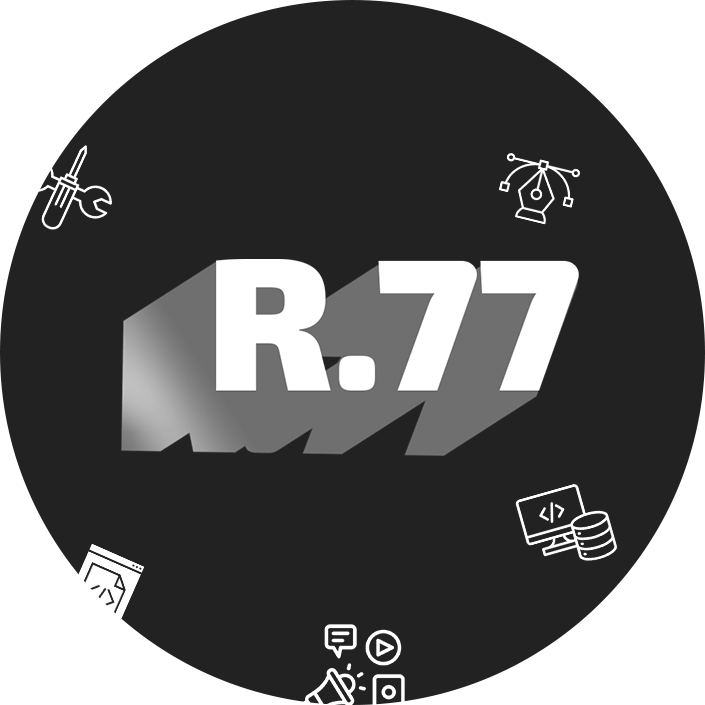
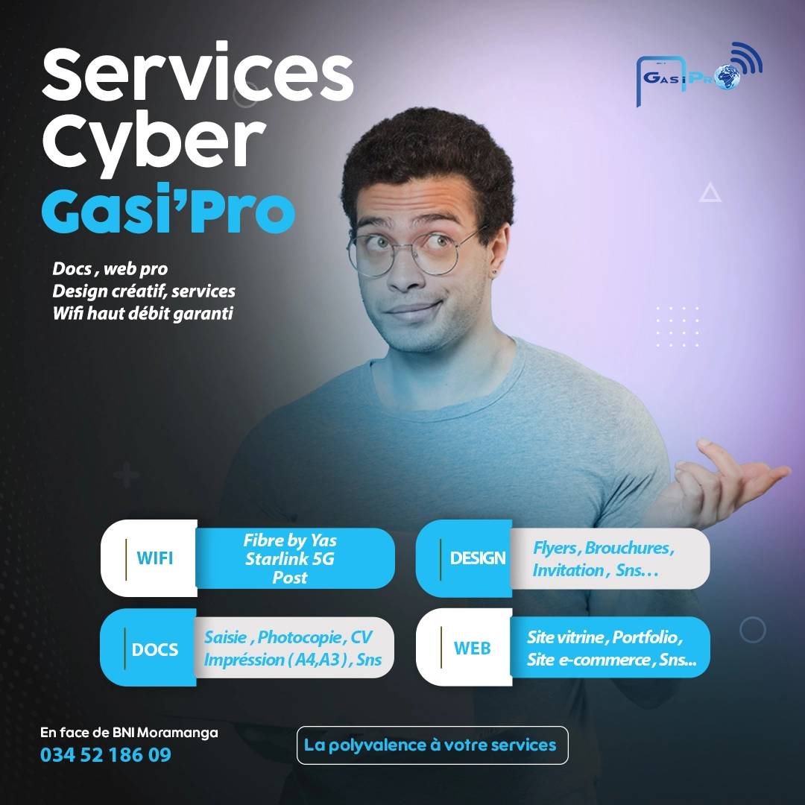

01 · Construire
Développement web
Développement front-end et back-end, intégration responsive, bases de données et API REST.

Développement web · Marketing digital
Création de sites web · SEO/GEO · Automatisation IA
Je suis un développeur web
Je conçois des sites performants et automatise les tâches répétitives pour améliorer votre visibilité et vous faire gagner du temps. J’accompagne entreprises, cabinets RH et juridiques, acteurs de l’hôtellerie-restauration et commerces.
Formé en sciences de gestion et en développement web, je cherche d’abord à comprendre les enjeux commerciaux derrière chaque projet. Cette vision guide ensuite les choix de conception et de développement.
J’ai développé des plateformes e-learning, refondu des sites WordPress pour des hôtels et des associations, et créé des applications sur mesure. Je privilégie un suivi rigoureux et des livraisons dans les délais convenus.
Compétences techniques en développement web, marketing digital, SEO technique et GEO, des moteurs de recherche à l’automatisation.
Développement front-end et back-end, intégration responsive, bases de données et API REST.
Stratégie marketing, SEO technique pour les moteurs de recherche, GEO pour les moteurs génératifs et gestion des réseaux sociaux.
Automatisation de tâches et mise en place de workflows entre outils.
Création et gestion de sites de contenu et de boutiques en ligne.
Création et retouche de supports graphiques pour le web et la communication.
Outils de productivité, de collaboration et de suivi du travail.
Édition de code, gestion de versions, tests d’API et administration de bases de données.
Les savoir-faire mobilisés pour cadrer, coordonner et maintenir des projets numériques.
Organisation des étapes, coordination des tâches et suivi de l’avancement.
Élaboration de messages et d’actions pour soutenir la visibilité d’une activité.
Conception de workflows assistés par des outils d’automatisation et d’intelligence artificielle.
Mise en place de solutions numériques adaptées aux besoins d’une organisation.
Coordination des personnes, des responsabilités et des priorités.
Accompagnement des utilisateurs dans l’usage quotidien des outils et applications.
Mise en production, suivi des versions et maintien des applications en condition opérationnelle.
Des qualités professionnelles au service d’une collaboration fiable et de projets bien menés.
De la conduite de projets à la réalisation d'applications web et de supports de communication, je combine efficacité opérationnelle, créativité et compétences techniques pour livrer des solutions concrètes.
Je conçois, développe et pilote des projets numériques avec une approche complète allant de la stratégie à la mise en production.
J’ai porté plusieurs missions de communication, de stratégie marketing et de mise en valeur numérique pour renforcer la visibilité de l’organisation et appuyer son développement.
Refonte, diagnostic et optimisation d’un site WordPress/WooCommerce pour améliorer la visibilité, l’expérience utilisateur et la conversion.
Conception et développement complet d’une plateforme e-learning moderne, sécurisée et évolutive, de zéro jusqu’au déploiement.
Modernisation complète du site WordPress d’une entrepreneure avec une approche orientée esthétique, expérience utilisateur et performance.
Refonte complète du site WordPress d’une maison d’hôtes réunionnaise pour moderniser l’image, améliorer la conversion et renforcer la confiance des voyageurs.
Modernisation complète d’un site WordPress engagé pour le vivre-ensemble et la lutte contre les discriminations, afin de renforcer son impact et sa visibilité.
Développeur web full-stack, webmarketeur et pilote de projets numériques.
Curriculum vitae · PDF · 191 Ko
Développeur web full-stack, spécialisé en création de sites, WordPress et e-commerce, référencement naturel (SEO), optimisation pour les moteurs génératifs (GEO) et marketing digital.
Ouvert aux missions freelance et en présentiel · Disponible à distance
Des clients satisfaits, des projets concrets, des résultats mesurables.
"Les flyers sont magnifiques. Un travail soigné, créatif et livré rapidement."
HAVOZOMMI – MIKABARYFlyers & Visuels

"Ronan a mis en œuvre son expertise technique et son design UI/UX pour créer une plateforme ludique visant à promouvoir la culture Malgache et l'histoire locale."
Gasi'Pro SarlDéveloppement Web – Moramanga
"Un service personnalisé, une ambiance paisible et conviviale — notre site reflète désormais parfaitement l'expérience que nous offrons à Blue Bay."
PingouinvillasWordPress & SEO – Île Maurice
Des solutions web et digitales sur mesure, adaptées à votre budget et vos objectifs.
Un site professionnel, rapide et bien référencé pour donner une première impression qui convertit. Idéal pour les indépendants, hôtels, associations et PME.
Demander un devisBoutique en ligne complète avec paiement intégré, gestion des produits et expérience d'achat fluide — WordPress/WooCommerce ou Shopify selon vos besoins.
Demander un devisLogos, flyers, affiches, visuels réseaux sociaux — créations sous Adobe Photoshop et Illustrator, prêtes pour l'impression ou la publication digitale.
Demander un devisRefonte, création ou maintenance : thème personnalisé, plugins configurés, sécurité assurée. Vous récupérez un site qui tourne sans vous occuper de la technique.
Demander un devisAvec n8n ou Make, automatisez WhatsApp, Gmail, les relances de prospects et la planification de contenus pour vos réseaux sociaux.
Demander un devisAudit complet + corrections on-page : balises, vitesse, structure, mots-clés. Résultat : meilleure position sur Google et plus de visiteurs qualifiés sans payer de pub.
Demander un devisTout ce que vous devez savoir avant de lancer votre projet web.
Ronan Andriamahenitsoa accompagne les entreprises, indépendants, hôtels et associations dans la création de sites vitrines, de boutiques e-commerce et de projets WordPress.
Basé à Moramanga, dans la région Alaotra-Mangoro, il travaille aussi à distance avec des clients à Madagascar, à La Réunion, à l’Île Maurice et ailleurs.
Demander un devis sur WhatsApp Écrire à Ronan par e-mailDéveloppeur web & webmarketeur freelance